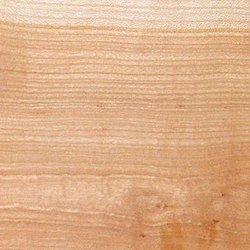
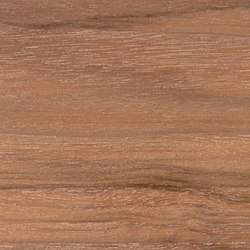

BükkfaA Bükk-vidék központi területe az ország tüdeje, védett és gondozott, nagy kiterjedésű vadon, amelynek tájképi szépsége és élővilága felejthetetlen élményeket nyújt a kirándulóknak. A hegységben sok jelzett turistaút található, melyek turistatérkép segítségével jól követhetők. Gyalogosan a látnivalók többsége felkereshető, míg motoros járművel a behajtás csak a kijelölt pihenőhelyek parkolójáig engedélyezett. A környező településeken sok turistaegyesület működik, amelyek meghirdetett túráikon vendégeket is szívesen látnak.

CseresznyeA Bükk-vidék központi területe az ország tüdeje, védett és gondozott, nagy kiterjedésű vadon, amelynek tájképi szépsége és élővilága felejthetetlen élményeket nyújt a kirándulóknak. A hegységben sok jelzett turistaút található, melyek turistatérkép segítségével jól követhetők. Gyalogosan a látnivalók többsége felkereshető, míg motoros járművel a behajtás csak a kijelölt pihenőhelyek parkolójáig engedélyezett. A környező településeken sok turistaegyesület működik, amelyek meghirdetett túráikon vendégeket is szívesen látnak.

DióA Bükk-vidék központi területe az ország tüdeje, védett és gondozott, nagy kiterjedésű vadon, amelynek tájképi szépsége és élővilága felejthetetlen élményeket nyújt a kirándulóknak. A hegységben sok jelzett turistaút található, melyek turistatérkép segítségével jól követhetők. Gyalogosan a látnivalók többsége felkereshető, míg motoros járművel a behajtás csak a kijelölt pihenőhelyek parkolójáig engedélyezett. A környező településeken sok turistaegyesület működik, amelyek meghirdetett túráikon vendégeket is szívesen látnak.
MahagoniA Bükk-vidék központi területe az ország tüdeje, védett és gondozott, nagy kiterjedésű vadon, amelynek tájképi szépsége és élővilága felejthetetlen élményeket nyújt a kirándulóknak. A hegységben sok jelzett turistaút található, melyek turistatérkép segítségével jól követhetők. Gyalogosan a látnivalók többsége felkereshető, míg motoros járművel a behajtás csak a kijelölt pihenőhelyek parkolójáig engedélyezett. A környező településeken sok turistaegyesület működik, amelyek meghirdetett túráikon vendégeket is szívesen látnak. A környező településeken sok turistaegyesület működik, amelyek meghirdetett túráikon vendégeket is szívesen látnak.
TölgyfaA Bükk-vidék központi területe az ország tüdeje, védett és gondozott, nagy kiterjedésű vadon, amelynek tájképi szépsége és élővilága felejthetetlen élményeket nyújt a kirándulóknak. A hegységben sok jelzett turistaút található, melyek turistatérkép segítségével jól követhetők. Gyalogosan a látnivalók többsége felkereshető, míg motoros járművel a behajtás csak a kijelölt pihenőhelyek parkolójáig engedélyezett. A környező településeken sok turistaegyesület működik, amelyek meghirdetett túráikon vendégeket is szívesen látnak.
HársfaA Faanyagának világos, idővel kissé sötétedő színe, jellegtelen textúrája van, a geszt és a szíjács nem különül el egymástól. Puha, könnyű faanyag, gyorsan szárad.ű
A hársak adják minden fafaj közül talán a legkönnyebben, legjobban faragható faanyagot, ez a faszobrászat legkedveltebb anyaga. Minden forgácsoló és forgácsmentes eljárással könnyen megmunkálható, gőzöléssel jól hajlítható, gyönyörűen csiszolható.
Fafaragáshoz, esztergáláshoz, fametszethez, bútorgyártáshoz, furnérkészítéshez, rétegelt lemeznek, facipő készítésére, cellulózgyártásra, rajzszén készítésére használják.
FenyőfaA Bükk-vidék központi területe az ország tüdeje, védett és gondozott, nagy kiterjedésű vadon, amelynek tájképi szépsége és élővilága felejthetetlen élményeket nyújt a kirándulóknak. A hegységben sok jelzett turistaút található, melyek turistatérkép segítségével jól követhetők. Gyalogosan a látnivalók többsége felkereshető, míg motoros járművel a behajtás csak a kijelölt pihenőhelyek parkolójáig engedélyezett. A környező településeken sok turistaegyesület működik, amelyek meghirdetett túráikon vendégeket is szívesen látnak.
SötétszilvafaA Bükk-vidék központi területe az ország tüdeje, védett és gondozott, nagy kiterjedésű vadon, amelynek tájképi szépsége és élővilága felejthetetlen élményeket nyújt a kirándulóknak. A hegységben sok jelzett turistaút található, melyek turistatérkép segítségével jól követhetők. Gyalogosan a látnivalók többsége felkereshető, míg motoros járművel a behajtás csak a kijelölt pihenőhelyek parkolójáig engedélyezett. A környező településeken sok turistaegyesület működik, amelyek meghirdetett túráikon vendégeket is szívesen látnak.